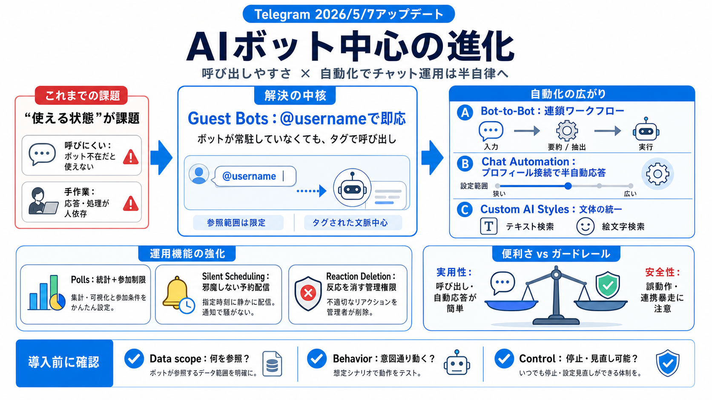

Telegram Bot API Limitations - Grokipedia
Key restrictions include [rate limits](https://grokipedia.com/page/Rate_limiting) on message sending—such as no more tha…

Key restrictions include [rate limits](https://grokipedia.com/page/Rate_limiting) on message sending—such as no more tha…
Smartwatch Apps, Rich Text for Bots, AI Guardians for Groups, and Much MoreMay 7. Guest AI Bots, Bot-to-Bot Chats, Chat …
# Telegram AI Platform 2026: Grok, Cocoon & What's Next. Tens of millions of people use AI inside Telegram every day - n…
**Quick Answer**: The Telegram Bot API itself is **completely free** for unlimited bots, unlimited users, and unlimited …
# Telegram Bot API: An Introduction. Telegram is a messaging app that offers developers two kinds of APIs to work with. …